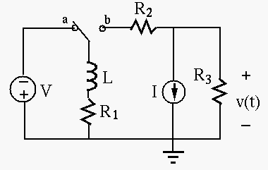

Next: About this document ... Up: midterm2_19f_key Previous: midterm2_19f_key
Instructions
In the circuit shown in the figure,
,
,
, , and the input voltage is
V. Find the output voltage
across  . (Hint: the circuit is linear, therefore the superposition
principal applies.)
. (Hint: the circuit is linear, therefore the superposition
principal applies.)

Solution: Use superposition theorem.
The circuit in the figure below is composed of three resistors
, and an ideal inductor . The current source
is 6 mA. The switch is open when  and the circuit has reached steady
state. The switch is then closed at
and the circuit has reached steady
state. The switch is then closed at  .
.

time  |
 |
 |
 |
|||||
 |
||||||||
 |
where and and the voltage and current associated with for , respectively. Their polarities and directions are shown in the figure.
 of the circuit, and give the expressions of
and associated with the inductor
of the circuit, and give the expressions of
and associated with the inductor  (6 pts).
(6 pts).
Solution:
| time |
|
|
|
|||||
|
4 | 4 | 2 | 2 | 0 | 4 | 2 | 2 |
| 4 | 3 | 3 | 2 | 2 | 3 | 3 | 2 | |
|
6 | 3 | 3 | 0 | 0 | 3 | 3 | 0 |
 jumps from 0 to 2V at t=0 and then decreases to 0 again exponentially.
jumps from 0 to 2V at t=0 and then decreases to 0 again exponentially.
jumps from 4 mA to 3 mA, jumps from 4V to 3V
jumps from 2 mA to 3 mA, jumps from 2V to 3V
decreases from 2 mA to 0 exponentially.
decreases from 2 V to 0 exponentially.
In the circuit shown in the following figure,
,
 ,
, , , . The switch is in position a and
the circuit has reached steady state, until the moment when the switch is
turned to position b. Determine the voltage
,
, , , . The switch is in position a and
the circuit has reached steady state, until the moment when the switch is
turned to position b. Determine the voltage  across as the response
of the system to the change of position of the switch.
across as the response
of the system to the change of position of the switch.
Hint: is the superposition of and responding to two processes
respectively:
(a) the voltage drop across due to the initial current through alone after
the switch is turned from a to b; and (b) the voltage across as the complete
response to the current source  alone after the switch turned from a to b.
alone after the switch turned from a to b.

Now solve the problem in the following steps by superposition theorem:
 through the inductor
before the switch is turned from a to b at ;
through the inductor
before the switch is turned from a to b at ;
 through right after the switch is
turned from a to b at ;
;
through right after the switch is
turned from a to b at ;
;
 after ;
right after ;
alone;
alone.
after ;
right after ;
alone;
alone.
Solution:
 (upward)
(upward)